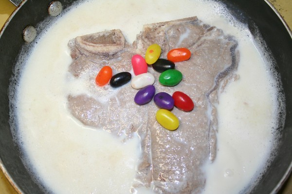

Milk Steak

Delicious steak stewed in honey, milk, and fall spices.
Milk steak is a dish that involves boiling a steak in milk. The lactic acid in milk tenderizes the meat and keeps it from drying out. Some say that milk steak should be served with jelly beans.
Ingredients:
- 1 8.8oz flat iron steak
- 2 cups mlik
- 1/4 cup honey
- 1/2 tsp cinnamon
- 1/2 tsp nutmeg
- 1 tsp vanilla extract
- Garnish:
Cooking Steps:
- Add the milk, honey, cinnamon, nutmeg, and vanilla to a medium sized saucepan
- Heat up the mixture, stirring until the honey has completely dissolved
- Bring the mixture to a boil
- Place the steak in the boiling milk
- Bring the liquid back to a boil and reduce the heat so the milk simmers
- Cook the steak for five minutes on one side, stirring the top occasionally to stop skin from forming on the milk
- Turn the steak over and cook for five minutes on the other side
- Make sure steak is cooked to an internal temperature of 140℉ alternatively until over hard
- Allow the steak to rest for a few minutes
- Garnish with jelly beans
- Serve